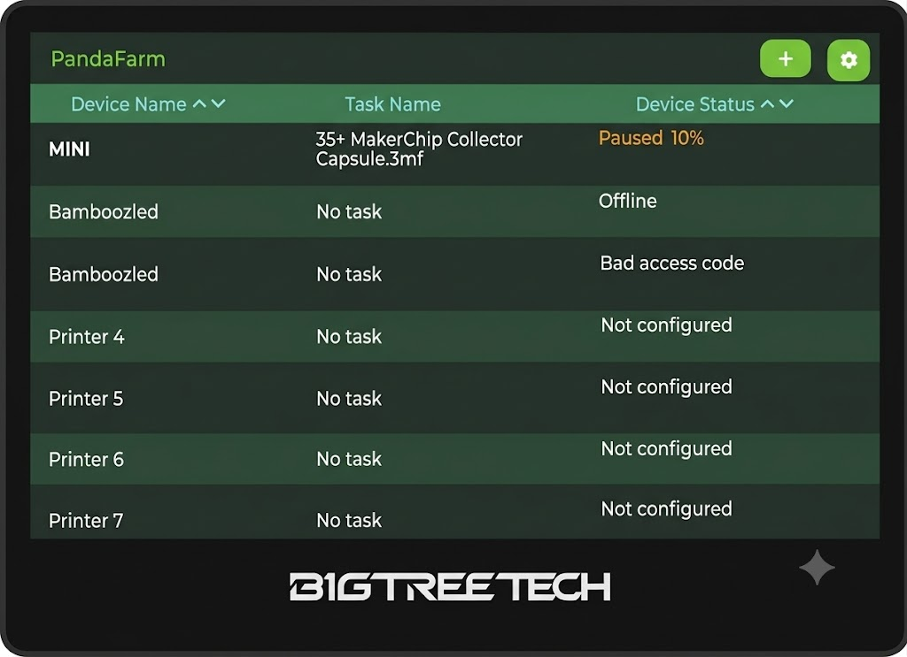
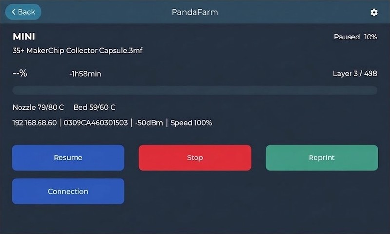

PandaFarm Web Flasher
Flash PandaFarm to BTT K-Touch / PandaTouch
Bambu Lab farm dashboard in a Studio-style list.
loading…
GitHub · Releases · Screenshots
Screenshots


Requirements
- Use Google Chrome or Microsoft Edge on desktop (Web Serial API).
- This page must be served over HTTPS (GitHub Pages works).
- Connect the K-Touch / PandaTouch with a USB-C data cable to your PC.
- If the device is not detected, reboot it with the slider switch on the back, then connect again.
Firmware source
Loads pandafarm-*.bin from this page (with a jsDelivr CDN fallback).
Click Reload firmware after a new release is published.
Use files from pio run build output (or a release zip):
Build with: pio run -e pandacupboard-arduino-3x — files in .pio/build/pandacupboard-arduino-3x/
Flash
Update keeps WiFi and printers. Fresh Install erases the chip.
Uses 115200 baud and uncompressed writes for CH340 USB bridges. Takes ~2-3 minutes — keep the cable still.
Disclaimer: TechJeeper Designs is not responsible for damage to your device. Flashing third-party firmware may void your manufacturer warranty. Proceed at your own risk.
After flashing
- Disconnect USB (or tap Reset if the screen stays blank).
- Tap the gear icon (top-right) → WiFi Setup and connect to your LAN.
- Gear → Printers — add a printer (name, IP, LAN access code from the printer’s WLAN settings).
- On the farm list, tap a printer for progress, pause, resume, stop, and reprint.
- The panel and printers must be on the same LAN. Local MQTT uses port 8883, user
bblp, password = access code.